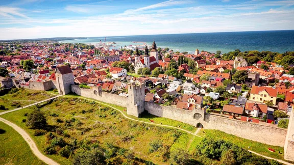
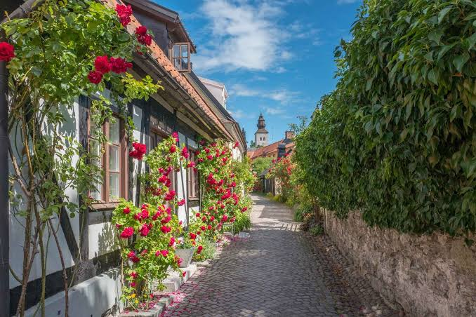
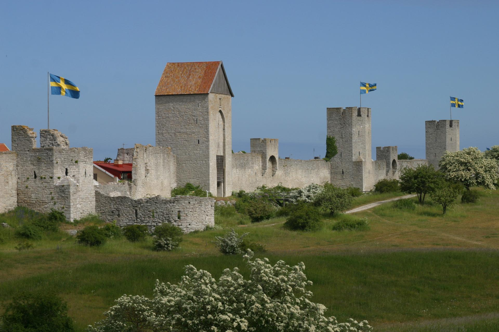
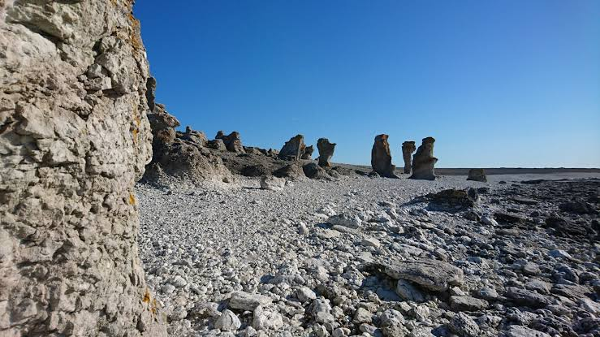
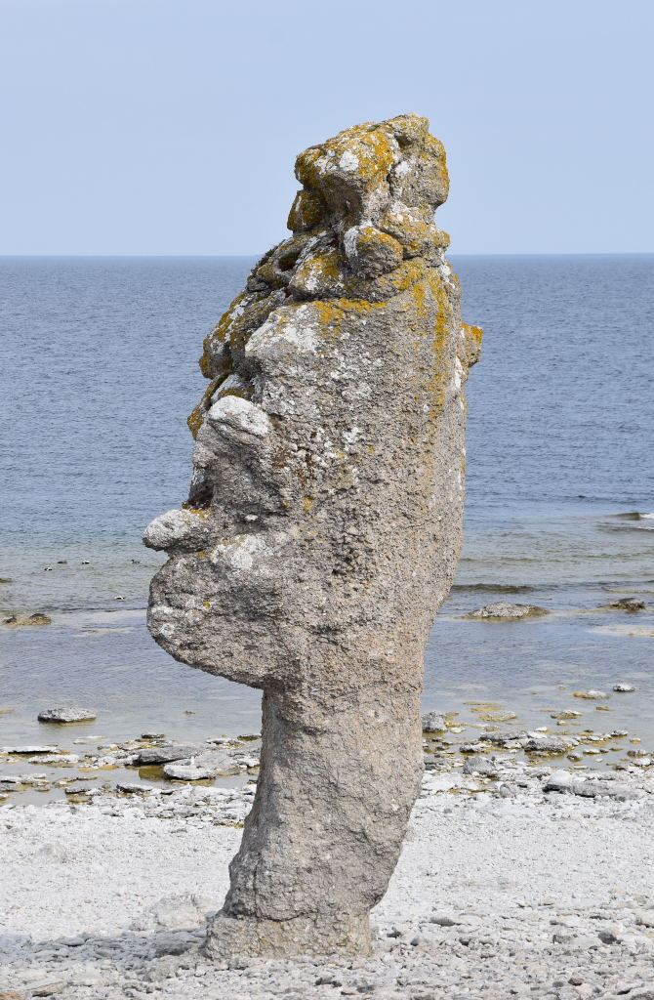
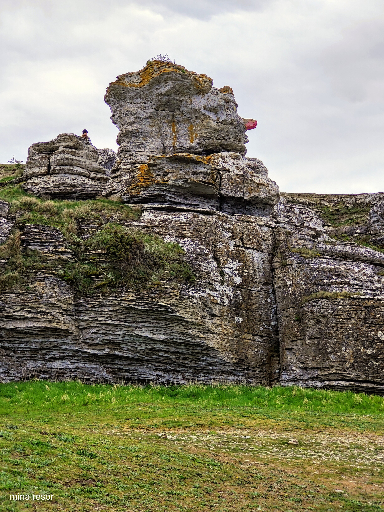
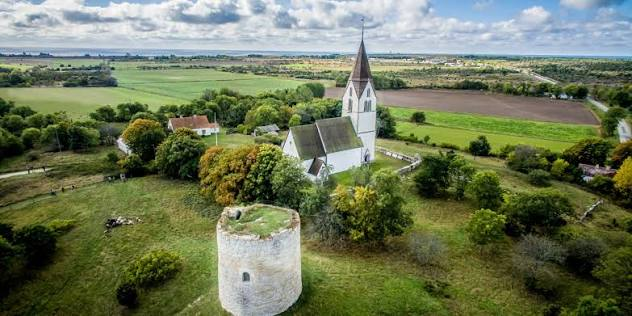
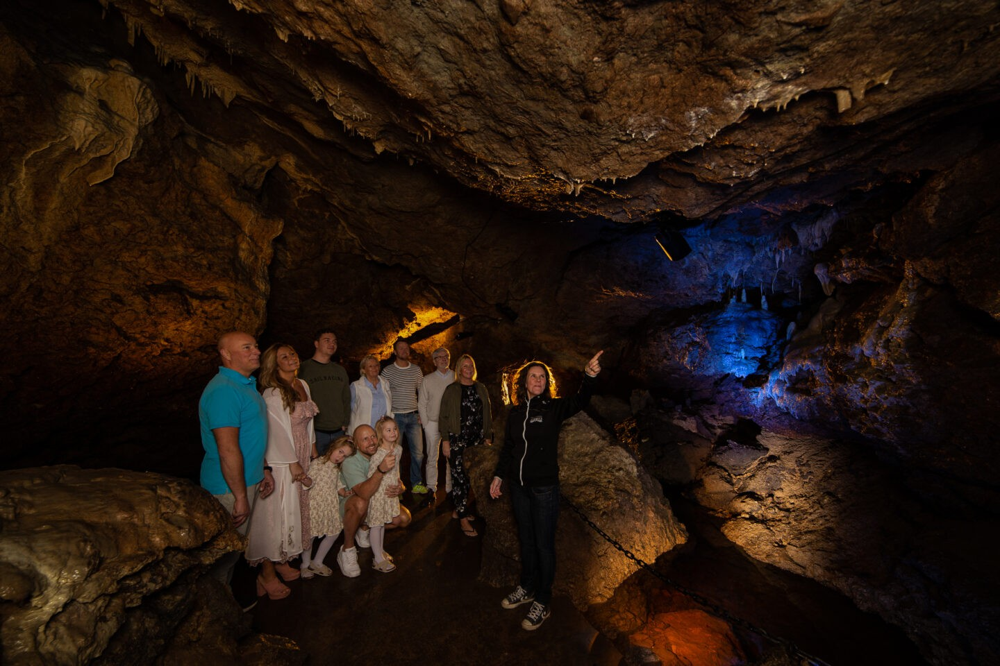
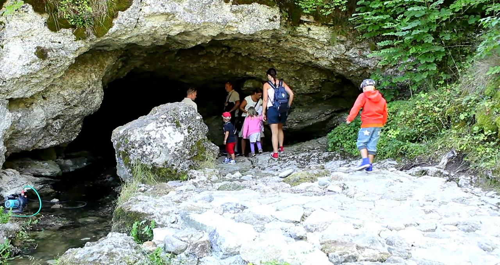
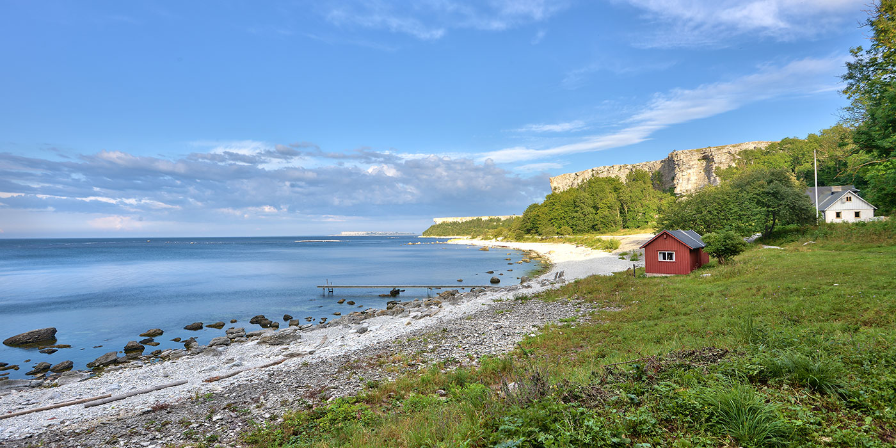

Visby innerstad och ringmuren
Visby innerstad
Visby innerstad är en av Sveriges bäst bevarade medeltida stadsmiljöer. Här möts smala kullerstensgator, gamla stenhus, kyrkoruiner och små gränder innanför den välkända ringmuren.
Under medeltiden var Visby en viktig handelsstad i Östersjöområdet och hade en central roll inom Hansan. Sedan 1995 finns Hansestaden Visby med på UNESCO:s världsarvslista tack vare den välbevarade stadsmiljön och dess historiska betydelse.
I dag finns restauranger, caféer, butiker och flera historiska sevärdheter runt om i innerstaden. Stora torget, Visby domkyrka och de många kyrkoruinerna är några av platserna som är värda ett besök.


Visby ringmur
Visby ringmur omger stora delar av den historiska innerstaden och är ett av Gotlands mest kända landmärken. Muren började byggas under 1200-talet och är ungefär 3,4 kilometer lång.
Ringmuren byggdes som ett försvar för den medeltida staden och består av höga kalkstensmurar, portar och försvarstorn. Stora delar av muren finns fortfarande kvar och den räknas som en av Europas bäst bevarade medeltida stadsmurar.
Det går att promenera längs stora delar av muren och från flera platser får man utsikt över både Visby och Östersjön. En promenad runt muren tar ungefär 45–60 minuter.


Langhammars på Fårö
Langhammars är ett av Fårös mest kända raukområden och ligger på öns nordvästra sida. Här finns flera stora och fantasifullt formade raukar som har skapats genom erosion av den gotländska kalkstenen.
Området ligger nära havet och erbjuder ett öppet och dramatiskt landskap som är typiskt för Fårö. Langhammars är ett populärt utflyktsmål för både naturupplevelser och fotografering.


Hoburgen och Sundre
Hoburgen ligger längst söderut på Gotland och är känt för sina höga kalkstensklippor, raukar och utsikten över havet. En av de mest kända raukarna i området är Hoburgsgubben, vars form påminner om ett ansikte sett från sidan.
Området kring Sundre bjuder på öppna landskap, kustnatur och flera historiska platser. Här finns även Sundre kyrka och goda möjligheter till promenader längs Gotlands sydligaste kust.


Lummelundagrottan
I Lummelundagrottan kan du gå med på spännande guidade turer där du utforskar grottans underjordiska gångar och formationer. Här finns bland annat droppstenar som stalaktiter och stalagmiter samt fossiler inbäddade i kalkstenen. Det är en fascinerande upplevelse under jord som passar både äventyrare och historieintresserade.


Stora Karlsö
På Stora Karlsö kan du ta en båttur ut till naturreservatet för att vandra längs kusten och uppleva den unika ön på en guidad tur. Här finns tusentals häckande sillgrisslor och tordmular kring de dramatiska kalkstensklintarna.
Ön bjuder dessutom på sällsynta växter, historiska miljöer och fantastisk utsikt över Östersjön från den välkända fyren.
